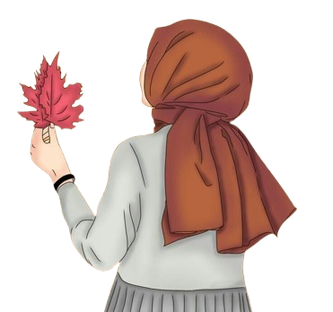

Perkenalkan,saya adalah Agnes Adelia putri, seorang mahasiswa semester 2 di Politekinik Negeri Madiun. Saat ini, saya sedang menjalani perjalanan pendidikan yang menarik dan penuh tantangan.Saya memiliki minat yang besar dalam ilmu komputer dan teknologi informasi. Sejak SMK, saya selalu tertarik dengan dunia komputer dan teknologi. Hal ini mendorong saya untuk memilih jurusan Teknik Informasi di perguruan tinggi.
Selama semester pertama, saya belajar banyak tentang dasar-dasar pemrograman, algoritma, dan struktur data. Meskipun tantangan itu besar, saya sangat menikmati setiap pelajaran dan mencoba untuk berpartisipasi aktif dalam kegiatan.Pada semester kedua ini, saya bersemangat untuk menggali lebih dalam dalam topik-topik yang lebih lanjut, seperti pemrograman lanjutan, basis data, dan jaringan komputer. Saya percaya bahwa pengalaman dan pengetahuan yang saya dapatkan akan mempersiapkan saya untuk menghadapi tantangan dunia nyata di masa depan.Saya percaya bahwa pendidikan adalah kunci untuk mencapai impian dan tujuan hidup saya. Dengan semangat belajar yang terus-menerus, saya berharap dapat meraih prestasi akademik yang gemilang dan menjadi kontributor yang berarti bagi masyarakat dan dunia.
